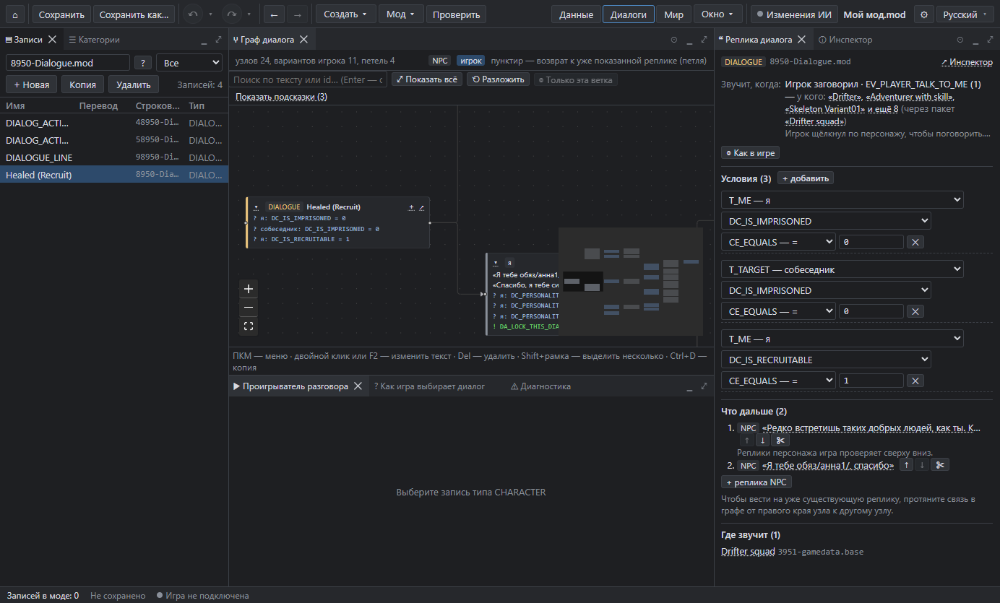
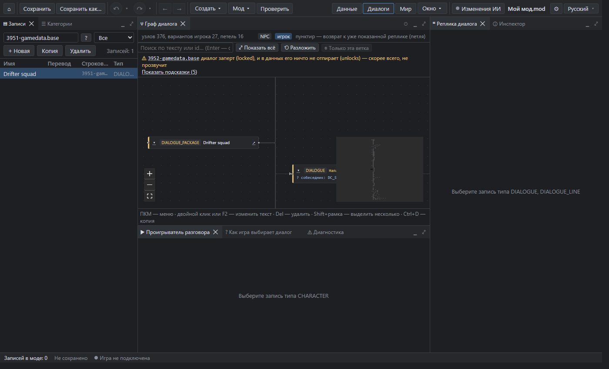
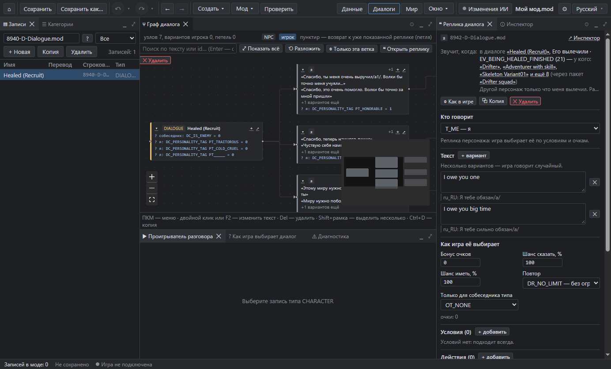

Макет, кода нет. Граф остаётся главным видом. Слева появляется пакет со списком событий, справа одна панель выбранной реплики, как в окне Dialogue в FCS, только с переводом рядом с оригинальными именами. Для тех, кто пришёл из FCS, есть вид «Дерево». Примеры взяты из игры: «acid rain» (55630-rebirth.mod) и вербовка «Healed (Recruit)» у пакета «Drifter squad» (3951-gamedata.base). Русские тексты взяты из перевода игры.
Макет



Сейчас (снимок Cactus, 1400×850). Диалог вербовки «Healed (Recruit)». Графу достаётся окно примерно 670×300: снизу 40% высоты занимает пустой проигрыватель («Выберите запись типа CHARACTER»), половину графа закрывает мини-карта. Узлы мелкие, условия написаны кодом (? я: DC_PERSONALITY_TAG PT_HONORABLE = 1), ответы игрока за краем экрана. Справа условия идут столбиком выпадашек T_ME — я / DC_IS_IMPRISONED / CE_EQUALS — =, по которым не скажешь, что это значит.
Сейчас: пакет «Drifter squad». Граф пакета — одно дерево на 376 узлов, событий на нём не видно. Чтобы узнать, что отряд говорит на «Его вылечили», надо раскрыть всё и искать.
Сейчас: реплика «Я тебе обязан/а/». Именно она перехватывает разговор (interrupt) и отпирает вербовку (unlocks). На графе этой связи нет совсем: из узла не выходит стрелка в другой диалог. Узнать о ней можно, только если пролистать панель справа до ссылок.
Отклонён (2026-11-19). Ответы игрока строками внутри карточки NPC. Узлов меньше, но непонятно, где говорит NPC, а где игрок, и какой ответ заканчивает разговор, а какой ведёт дальше. Оставлен для истории.
Граф: реплика = узел (выбран).Слева пакет: у кого он и какие события в нём заняты; щелчок по диалогу открывает его граф. В центре граф на всю высоту, масштаб 100%, мини-карты нет. Каждая реплика — свой узел, как в FCS: жёлтая полоса — NPC, синяя — игрок, зелёная — вставка другого персонажа. Из каждого ответа игрока выходит стрелка к следующей реплике. Если стрелки нет, на узле красная плашка «⏹ конец разговора». На узле видно всё, что влияет на игру: «если …» — условия, «→ …» — эффекты, значки — свойства не по умолчанию, ①② — порядок, в котором игра проверяет реплики NPC. Сиреневый пунктир — вход из другого диалога. Длинный текст на узле занимает 3 строки, «весь текст ▾» раскрывает его, а целиком он виден в панели справа и в виде «Дерево». Справа панель выбранной реплики: под каждым условием и эффектом готовая фраза по-русски, у каждой выпадашки рядом оригинальное имя, внизу описание поля, как в FCS.
Дерево (как в FCS). Те же данные, переключатель «Граф | Дерево» над графом. Реплики идут отступами, NPC и игрок разного цвета, условия, эффекты и свойства — колонками справа. Кнопки как в FCS: «+ Реплика NPC», «+ Ответ игрока», «+ Вставка» (Add Line / Add Interjection). Выбор строки показывает ту же панель справа. Здесь удобно читать длинный диалог сверху вниз, как сценарий.
Добавить условие. «+ условие» открывает список с поиском, разбитый на группы. Ищет по-русски, по-английски и по коду: «голод», «starv», «DC_STARV». Внизу пояснение выбранного пункта. Условия, которые в данных хранятся ссылками («моя раса», «фракция собеседника», «есть предмет»), стоят в том же списке: моддеру не нужно знать, где они лежат. Так же устроен список эффектов: «вступает в отряд», «изменить отношения», «дать предмет» и т. п.
Кислотный дождь. Пакет «player character default», событие «Кислотный дождь · EV_ACID_RAIN (62)». Сразу видно, когда звучит диалог, у кого он есть и что собеседника нет. На узле все три варианта текста («игра говорит один наугад») и значок «раз в 2 ч». Выбран сам диалог, поэтому справа его свойства — галочки, как в шапке окна Dialogue в FCS: «Можно с врагом», «Только раз», «Заперт», «По одному», «Монолог». Находка из данных: все 14 пакетов с кислотным дождём принадлежат персонажам игрока (dialogue package player). Обычные NPC в игре про дождь не говорят. Если дать им такой диалог, игра, может быть, и не вызовет это событие для NPC. Это надо проверить в игре.
Создать, шаг 1. Наведите мышь на событие в списке и нажмите «+»: «Новый диалог на «Кислотный дождь»». Второй вход — «Создать ▾ → Диалог на событие…» на панели. Тогда событие выбирают в том же окне.
Создать, шаг 2. Одно окно, а не три страницы: событие уже выбрано, остаётся сказать, кто говорит и что. «Только раса» кладёт диалог в тот же пакет и добавляет условие «моя раса: Шек». Повтор подставлен как у соседнего диалога на это событие. Окно само ставит диалогу бонус очков +1 и пишет почему: условие «моя раса» очков не даёт, и без бонуса шек выбирал бы между новой и старой фразой 50 на 50. Именно такие вещи моддер в FCS узнаёт только опытом. Строка «Будет» перечисляет, что изменится. Всё создаётся одним шагом отмены (ядро для этого уже написано в 7c).
Создать, шаг 3. Новый диалог отмечен «новый» в списке событий и на графе. Дальше с ним работают как с любым диалогом: условия и эффекты в панели справа, «+ ответ» и «+ реплика» на узле. «▶ Проиграть» открывает внизу полосу «Кто что скажет»: у шека новый диалог набирает 1 очко (бонус), старый — 0, и игра берёт новый. Остальные персонажи говорят прежнее. Уберите бонус, и полоса сразу покажет «ничья, 50 на 50».
Можно ли весь контекст FCS встроить в граф? Честный ответ
Да, кроме описаний полей. Но узел показывает, а правка идёт в панели справа. На узле видно всё, что меняет поведение диалога: событие, у кого пакет, условия, эффекты, свойства со значением не по умолчанию, переходы в другие диалоги, порядок реплик. Выпадашки для правки на узле не стоят. Если поставить в каждый узел выпадашки «кто → условие → сравнение → число» и сетку из восьми свойств, узел вырастет в целую панель, и вернётся то, на что вы жаловались: узлы мелкие и раскиданы. FCS устроен так же: он показывает условия и свойства только выбранной реплики. Мы показываем их коротко на всех узлах сразу, а целиком — у выбранной.
Что в FCS
Где в FCS
На графе G
Как выглядит (пример из игры)
Правка
Событие (EV_)
окно Dialogue Package, список Events
да
шапка диалога: «Звучит: Игрок заговорил · EV_PLAYER_TALK_TO_ME (1)»; слева список событий пакета
список слева: «+», «Привязать готовый…», перетащить на другое событие
У кого пакет
нигде, надо знать самому
да
слева вверху: «отряды Drifter, Adventurer with skill и ещё 9», «наследует 5 пакетов»
выбор пакета вверху слева
Условия DC_ (кто → условие → сравнение → число)
Dialogue → Conditions
да
«если: черта «честный» PT_HONORABLE», «если: меня можно нанять DC_IS_RECRUITABLE»
панель справа, строка из четырёх выпадашек и фраза под ней
Условия-ссылки (my race, target faction, has item…)
отдельная таблица ссылок
да
в том же месте: «если: моя раса: Шек my race»
тот же список «+ условие»
Эффекты DA_
Dialogue → Effects
да
«→ вступает в отряд DA_JOIN_SQUAD_WITH_EDIT», «→ даёт 50 катов DA_GIVE_MONEY»
панель справа, пояснение под выпадашкой
Эффекты-ссылки (change relations, give item, AI contract…)
Effects (выпадашка)
да
«→ отношения с «Святая Нация» +10 change relations»
сиреневая стрелка в другой диалог и узел-вход «← «Я тебе обязан/а/» отпирает этот диалог»
«+ эффект → отпереть диалог…» или протянуть стрелку
Свойства: шанс, повтор, очки, тип собеседника
сетка свойств
только не по умолчанию
значки «30%», «раз в 6 ч», «+5 очков». Если всё по умолчанию, значков нет.
панель справа, «Как игра выбирает»
Галочки диалога: Can talk to enemy, Run once only, locked, one at a time
Dialogue вверху
только включённые
«🔒 заперт», «только раз», «с врагом»
панель справа (вид «Кислотный дождь»)
Тексты text0…N
дерево, по одному
да
первый вариант целиком, «1 из 4 ▾» раскрывает остальные; у коротких монологов видны все
двойной щелчок на узле или панель
Кто говорит (T_ME, T_TARGET, T_INTERJECTOR…)
speaker
да
цвет полосы: NPC — жёлтый, игрок — синий, вставка — зелёный (как зелёные узлы FCS)
панель справа
Порядок реплик
порядок в дереве
да
①② на соседних репликах NPC: «игра проверяет сверху вниз»
«Что дальше» ↑↓ в панели
Описание поля (Selected Item: Description)
низ окна
нет
на узле не помещается, и на всех узлах оно одинаковое
низ панели справа, как в FCS
Где граф не спасает. Пакет «Drifter squad» вместе с наследованием — это 27 своих диалогов на 18 событий и сотни реплик. Граф целого пакета нечитаем, это видно на снимке «Было: пакет». Поэтому пакет показан списком событий, а граф — всегда один диалог плюс узлы-входы и выходы в соседние. Ещё одна оговорка: имена условий и эффектов придётся перевести (около 80 условий DC_, 60 эффектов DA_, черты PT_ и т. д.). Это шаг 7f, он делается так же, как 7b с событиями. Пока перевода нет, на узле стоит только код: в fcs.def пояснений к DC_ и DA_ нет, их придётся написать самим. Несколько имён стёрты ещё в исходниках FCS (PT_____, EV_I_________); у таких показываем «имя стёрто» и смысл, если он известен по данным.
Как сделать: «NPC говорит X под кислотным дождём»
Раскладка «Диалоги» → слева «Пакет» → выбрать, у кого будет фраза. Например, «player character default»: это все персонажи игрока, ведь в игре про дождь говорят только они.
В списке событий найти «Кислотный дождь · EV_ACID_RAIN (62)» (поиск «дожд», «acid» или «62») и нажать «+» в строке (вид «Создать 1»).
В окне выбрать «Кто говорит»: все, одна раса, один персонаж, отряд, фракция. Написать текст, при желании несколько вариантов. Нажать «Создать» (вид «Создать 2»).
Диалог открывается на графе. При желании добавить условие («если: голодает») или эффект в панели справа (вид «Создать 3»).
«▶ Проиграть» показывает, кто что скажет на это событие и почему.
В FCS для того же нужно открыть пакет, найти событие, нажать Add New, затем в окне Dialogue нажать Add Line и вписать текст. Условие «моя раса» добавляется отдельно, через ссылки. Шагов примерно столько же, но в FCS нужно заранее знать, что событие живёт в пакете. В G это видно с первого экрана.
Почему реплика = узел (решение 2026-11-19)
Было два варианта: «ответы игрока строками внутри карточки NPC» (вид «Отклонён») и «каждая реплика — свой узел». Выбран второй. В нём сразу понятно, где говорит NPC, а где отвечает игрок, и видно, какой ответ заканчивает разговор, а какой ведёт дальше. Он один к одному совпадает с данными и с FCS, и в коде он ближе к нынешнему графу.
Что делаем, чтобы граф не расползался
Граф всегда показывает один диалог, а не весь пакет.
Длинный текст на узле занимает 3 строки, «весь текст ▾» раскрывает его. Варианты текста — «1 из 4 ▾».
Раскладка слева направо по колонкам: NPC → игрок → NPC. «Разложить» возвращает порядок.
Когда тексты очень большие — «Дерево (как в FCS)»
Тот же диалог сверху вниз, как сценарий: отступы, NPC и игрок разного цвета, тексты целиком.
Условия, эффекты и свойства — колонками справа.
Та же панель реплики справа и те же кнопки: «+ Реплика NPC», «+ Ответ игрока», «+ Вставка».
Переключатель «Граф | Дерево» над графом, выбор запоминается.
Чем это лучше FCS (и что берём у FCS)
Лучше, чем в FCS
Видно, когда звучит диалог и у кого он есть, прямо в шапке графа. В FCS надо помнить, в каком пакете он лежит.
Видны переходы между диалогами (отпирает, перехватывает, запирает). В FCS это ссылки без стрелок.
Человеческие слова рядом с кодами: «черта «честный» PT_HONORABLE». Ищется по-русски, по-английски и по коду.
Под условием и эффектом готовая фраза: «Сказать, только если у меня черта «честный»».
Порядок и выбор игры: ①②, очки, «▶ Проиграть» — кто что скажет и почему.
Создать на событие одним окном, одним шагом отмены.
Ошибки на узле: «заперт, и никто его не отпирает», «эта реплика никогда не прозвучит».
Берём у FCS как есть
Список событий пакета и кнопки «новый на событие» и «привязать готовый».
Все поля выбранной реплики на одном экране: кто говорит, условия, эффекты, свойства.
Описание выбранного поля внизу.
Дерево с отступами, «Add Line», «Add Interjection», галочки диалога.
Оригинальные имена EV_/DC_/DA_/T_/DR_/OT_ никуда не прячутся.
Что меняется в раскладке «Диалоги»
Слева новая вкладка «Пакет», она открыта первой. «Записи» и «Категории» остаются вкладками рядом. Новой колонки нет (правило §7 принципов).
В центре граф на всю высоту. При открытии масштаб 100% и показан корень. Мини-карта выключена, включается кнопкой. Над графом переключатель «Граф | Дерево», «▶ Проиграть», поиск, «Разложить», «Коды FCS» (прятать или показывать коды на узлах).
Проигрыватель больше не стоит снизу постоянно. «▶ Проиграть» открывает внизу полосу на нужное время. «Как игра выбирает» и «Диагностика» открываются там же.
Справа «Реплика» (переделанная). «Инспектор» остаётся вкладкой рядом для сырых полей.
Граф пакета (дерево на 376 узлов) заменяет список событий. Граф всегда показывает один диалог.
Порядок работ (черновик, уточню после вашего «да»)
G1. Раскладка и панель «Пакет». Список событий с переводом и счётчиком, у кого пакет, наследование, «+» на событии. Граф на всю высоту, проигрыватель по кнопке.
G2. Новые узлы. Реплика = узел (NPC, игрок, вставка — разным цветом), текст крупно, длинный текст в 3 строки с «весь текст ▾», «если / →», значки свойств, ①②, «⏹ конец разговора», масштаб 100%.
G3. Переходы между диалогами. unlocks / interrupt / locks / crowd trigger — стрелками, узлы-входы и выходы.
G4. Панель реплики. Строки условий как в FCS, фраза под строкой, единые списки условий и эффектов (вместе со ссылочными), описание внизу. Опирается на 7f (переводы DC_/DA_/T_/DR_/OT_/PT_).
G5. Дерево (как в FCS). Переключатель «Граф | Дерево», тот же диалог сверху вниз с полными текстами, колонки условий, эффектов и свойств, «конец» у ответов. Та же панель справа, выделение общее с графом.
G6. «Новый диалог на событие». Окно поверх готового ядра 7c, входы «+» в списке и «Создать ▾».
G7. «▶ Проиграть»: кто что скажет на событие (это бывший пункт 7d «Все диалоги на событие»).